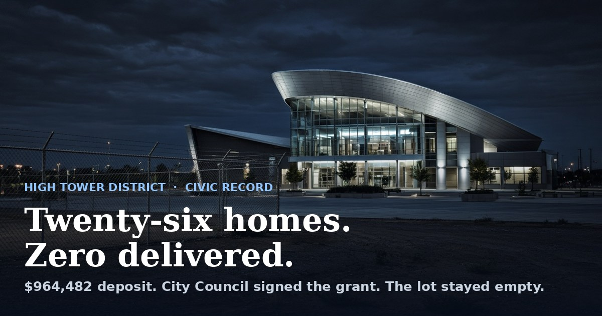
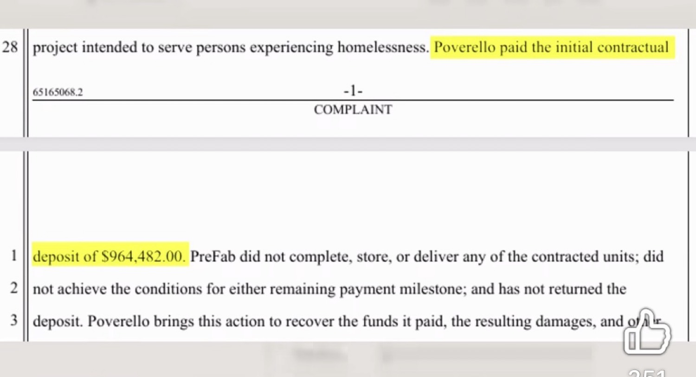

The complaint says Poverello paid a $964,482 deposit for factory-built units that were never completed, stored, or delivered. The City Council sent the public money that made that deposit possible. That is the lock that failed.
Published September 2, 2026 · Tower District, Fresno

The building stayed lit. The housing did not arrive.
Public money
$964,482 deposit
ARPA grant approved by Council in 2023. Same figure later appears in the civil complaint as the initial payment to PreFab.
Contracted units
26 homes. Count delivered: 0
That is the allegation in Superior Court. PreFab denies it and says required conditions were not met. The units are still not on the ground.
Who held the lock
City Council
Voted the grant. Accepted staff paper. Waited three years. Then voted in closed session to sue the nonprofit instead of explaining the missing lock.
Fresno has a talent for spending compassion in public and losing the inventory in private.
On February 23, 2023, the City Council approved a grant of $964,482 in American Rescue Plan Act funds for Poverello House to put up 26 tiny houses as permanent housing for people living on the street. The City Clerk later logged the grant agreement as item 23-263, adopted March 2, 2023. The units were supposed to be at least 288 square feet, with a kitchen and a bathroom, on city land leased to the nonprofit. Staff sold speed. Modular. Factory-built. Faster than stick-built charity.
The city later committed about $2 million to the same idea. About $965,000 from ARPA. About $1 million from the state's Encampment Resolution Funding grant. Poverello then signed, in March 2023, with PreFab Innovations Inc. and its founder, David George Clevenger Jr., to manufacture, store, and deliver 26 factory-built homes for about $1.96 million, with a promised window of 210 working days.
Poverello paid the initial contractual deposit of $964,482.00.
That sentence is not rhetoric. It is line 1 of the complaint page circulating now. The next lines say PreFab did not complete, store, or deliver any of the contracted units, did not hit the remaining payment milestones, and has not returned the deposit. Poverello filed in Fresno County Superior Court in mid-August 2026 and named breach of contract, conversion, and fraud. The complaint alleges the deposit may have been diverted to other projects, business expenses, debts, or personal use. Those last claims are allegations. They have not been proven. PreFab denies the complaint, says the conditions needed to finish and deliver the units were not met, and says it will put a full accounting in court instead of in the press.

Complaint excerpt: the deposit figure matches the 2023 Council ARPA grant to the dollar.
The lock was the Council's job
A contractor can fail. A nonprofit can pick a bad vendor. White-collar cases get filed every week in this county. That is not the whole story, and it is not the story that belongs only to lawyers.
The City Council is the body that directs government funds. Checks and balances, in this setting, are not a civics poster. They are performance bonds that actually bind. Milestone payments that do not move until units exist. License checks that happen before the wire, not after the FBI is already in the building. Public status reports that do not call a project complete while the inventory is still a press release.
Look at the city's own 2023 SLFRF recovery-plan report. The tiny-home line item is listed at $964,482. Managing department: Planning and Development. Then the form does something a ledger is not allowed to do. Project status: Complete. A few lines later the same report says permanent supportive housing units created are pending completion, and that the program is still in pre-development. Complete and pending in the same federal packet. That is not a typo that explains itself. That is how oversight dies on paper while the street stays the street.
By February 2026 the California Attorney General's office had filed a licensing complaint seeking to strip Clevenger of a contractor license after claims from past business partners. FOX26 later reported that PreFab license No. 1078820 was suspended for failure to meet workers' compensation requirements, and that a pending Contractors State License Board case accused the firm, doing business as Pocket Home Professionals, of diverting funds or failing to account for them, taking too much money up front, and abandoning a project. Those administrative claims are also unresolved. They were already loud enough that a careful city would have stopped writing new purchase orders.
Fresno did not fully stop. Reporting on Clevenger's other work shows a November 2024 City of Fresno product-purchase contract with PreFab for modular crew cabins at Camp Fresno, about $129,476. The Rescue Mission, which had housed the operation at 1801 Santa Clara Avenue under what its CEO later called a sweetheart arrangement, evicted the company in 2025 over unpaid rent and damages. Partners across the Valley were already telling reporters the same story in private: deposits in, units late or absent, communication gone.
So the sequence is not mysterious. Council votes the compassion money. Staff writes the hopeful report. The nonprofit selects the factory. Nearly a million dollars leaves as a deposit. Years pass. No cottage community appears. Then, on August 13, 2026, the Council votes 6-0 in closed session to initiate litigation against Poverello House. Councilmember Mike Karbassi was absent. City Attorney Andrew Janz told Fresnoland the city wants the full amount back, nearly two million in taxpayer dollars, and that forgiving a remaining balance was unacceptable "especially when the FBI and Attorney General are involved." Poverello said it had offered to return the $1 million in state funds and that staff had already been interviewed by the FBI about the contractor. Janz said the city still wants the whole stack.
Suing the nonprofit in year three is not the same thing as watching the money in year one. Recovery after the fact is what you do when the lock was never installed.
Fresno City Hall. The grant was voted here. The empty inventory was not.
Two kinds of crime use the same vacancy
This district does not get to pretend that missing houses are only a spreadsheet event.
When promised units do not exist, the people those units were named for remain on the sidewalk, in the canal easement, in the doorway, in the stolen car. Violent crime does not pause for a civil caption. Theft, assault, open-air dealing, and the predation that follows untreated addiction all feed on the same unmanaged ground. That is the street half of the failure. It is not a metaphor. It is the reason neighbors in the Tower District built a crime-watch group in the first place.
The other half is white collar. Large public deposits, thin verification, a vendor already collecting other people's money for other unbuilt products, a city that kept the relationship warm enough to buy more modules the next year. Fresno has a long record of letting that pattern interfere with legitimate businesses that actually deliver work. The circumstantial file on this project is now thick enough that "we meant well" is no longer an answer. Meaning well is how the wire gets approved. Meaning the inventory into existence is the job.
Call the pattern what it is without dressing it up as a conspiracy novel. Public officers directed public funds into a housing program that produced no housing. They accepted status language that conflicted with reality. They left the recovery problem to lawyers after state and federal investigators were already in the room. That is a failure of checks and balances. In a fiduciary setting, repeated failure of that kind is how corruption over the public interest looks before anyone files the prettier charge.
The civil case will sort PreFab, Clevenger, and Poverello. It may sort diversion. It may not. Courts do that work slowly. Voters do not have to wait for a verdict to judge the lock that Council failed to build.
The chair swap is not a clean start
November 3, 2026 is not a costume change. It is the first chance in eight years to put a new name on the District 3 microphone that covers downtown, Chinatown, Edison, Lowell, and the Tower District.
Miguel Arias has held that seat since 2019 and terms out in January 2027. He is running for Fresno Unified Trustee Area 1, the Edison region. Keshia Thomas, the Fresno Unified trustee for that same region, is running for the District 3 Council seat he is leaving. That is the swap. Same southwest map. Same families. Different letterhead. Assemblymember Joaquin Arambula, terming out of Assembly District 31, is the other name in the District 3 runoff. Annalisa Perea is leaving the District 1 Council seat to chase the Assembly seat Arambula is leaving. The chairs move. The inventory problem does not move with them unless someone makes it move.
This page does not endorse a candidate. It posts a notice.
If you intend to sit in one of those chairs, accountability is going up, not down. Residents can now read the grant, the recovery-plan contradiction, the complaint, the license file, and the closed-session vote in one sitting. That used to take a newsroom. It no longer does. Critical thinking is not a slogan for the dais. It is how you keep a public deposit from becoming a federal problem with your name on the approval.
Do not campaign as if compassion language is a substitute for units. Do not treat "homeless services" as a shield against asking where the houses are. Do not inherit Arias's vocabulary about the street while inheriting none of the duty to count inventory. Thomas lists homeless-ministry work among her affiliations. That makes the missing cottages her problem the minute she asks for the Council gavel, not a reason to look away. Arambula spent a decade in Sacramento around the same state housing money that fed this pile. That makes the missing cottages his problem the minute he asks for the local gavel.
The outgoing Council does not get a farewell pass either. They voted the 2023 grant. They accepted the paper that called a pending project complete. Some of them were still in the room in 2024 when the city wrote PreFab another purchase order. On August 13 they voted to sue the nonprofit. Recovery is necessary. It is not repentance. Repentance would be a public accounting of why the lock was never built, and a rule that no homelessness appropriation of this size moves again without a bond, a milestone that requires a photograph of a finished unit, and a staff signature that can be read under oath.
Notice to anyone asking for the seat
The test is inventory
If you want the job, say where the 26 homes are. Say why a $964,482 public grant became a deposit with no units. Say what lock you will install before the next wire. Soft language about services is how this city already failed. The street still has the people. The file now has the numbers. That is enough to start asking harder questions than the last dais asked.
What this page is not doing
It is not declaring a criminal verdict against Clevenger, PreFab, Poverello, or any Councilmember. Those questions belong to courts and, where the facts support it, to prosecutors. Janz has already put the FBI and the Attorney General into the public record on this file. That is enough signal.
It is not calling elected people terrorists. Reckless direction of public money, and a long local habit of letting disorder and grift share the same block, are serious enough without stealing a word that belongs to mass violence. The responsible word here is fiduciary failure. The political word is enabling. The practical word is zero houses.
It is also not a brief for shutting every shelter. Poverello feeds and beds people in this city and has for decades. That work can be real and this contract can still be a wreck. Both facts can sit in the same paragraph. The wreck is what Council was paid to prevent.
Record
Feb. 23, 2023. Council approves $964,482 ARPA grant to Poverello House for 26 tiny houses. Fresnoland, March 7, 2023.
March 2, 2023. City Clerk agreement 23-263, grant under the American Rescue Plan Act.
March 2023. Poverello contracts PreFab Innovations / David George Clevenger Jr. for 26 factory-built homes, about $1.96 million, 210 working days. Complaint and FOX26.
Deposit. $964,482.00 paid. Complaint excerpt.
2023 SLFRF report. Same dollar figure. Status marked Complete. Outcomes still listed pending. City of Fresno recovery-plan PDF.
Nov. 2024. Separate City of Fresno purchase contract with PreFab for Camp Fresno crew cabins, about $129,476. Kings Network News reporting on the contract file.
Feb. 2026. Attorney General complaint seeking to strip the contractor license. Fresnoland.
Aug. 13, 2026. Council votes 6-0 in closed session to initiate litigation against Poverello. Karbassi absent. Fresnoland, Aug. 14, 2026.
Janz. City wants nearly $2 million returned. "Unacceptable especially when the FBI and Attorney General are involved."
Mid-Aug. 2026. Poverello sues PreFab and Clevenger. Breach, conversion, fraud alleged. Deposit not returned. Units not delivered. PreFab denies and points to unmet conditions.
License file. CSLB No. 1078820 reported suspended for workers' compensation noncompliance. Separate pending disciplinary case. FOX26.
Nov. 3, 2026. District 3 runoff: Joaquin Arambula and Keshia Thomas. Arias running for Fresno Unified Trustee Area 1, the seat Thomas is leaving.
Sources
Jackie Schuster, "Fresno commits $900K to new permanent housing project," Fresnoland, March 7, 2023.
City of Fresno, Poverello House grant agreement 23-263, March 2, 2023, City Clerk file.
City of Fresno, SLFRF Recovery Plan Performance Report 2023, tiny-home project line $964,482.
Pablo Orihuela, "Fresno's Poverello House at the center of a tiny homes controversy," Fresnoland, August 14, 2026.
Pablo Orihuela, "Fresno nonprofit sues contractor for allegedly failing to build homes," Fresnoland, August 27, 2026.
FOX26 / KMPH, "Poverello House sues contractor, alleges 26 Fresno tiny homes were never built," August 27, 2026.
Superior Court complaint excerpt, Poverello House v. PreFab Innovations Inc. and David George Clevenger Jr., deposit $964,482.00.
Kings Network News, reporting on PreFab contracts, related civil cases, and the November 2024 Camp Fresno purchase order.
Fresnoland and Fresno Bee election files, 2026 District 3 and Fresno Unified Trustee Area 1 candidate lists.